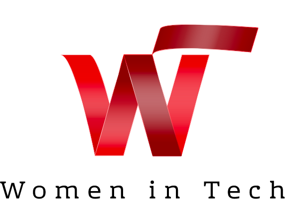
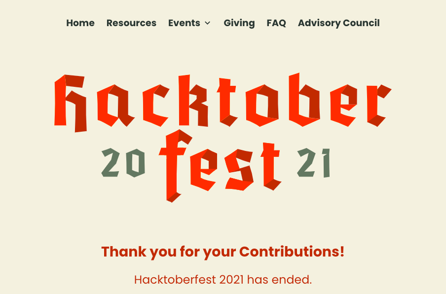
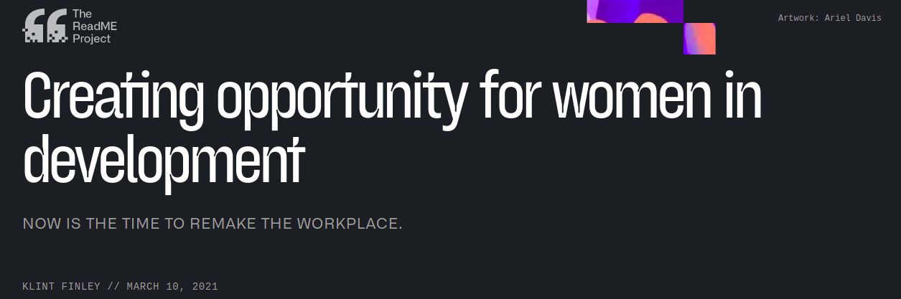
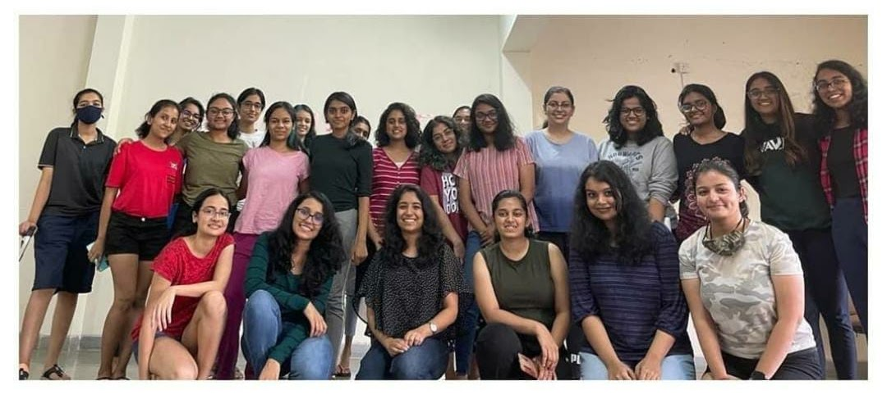

Women in Technology: My Journey
Women have paved their way into STEM in inspiring ways. But we still have a long way to go before we can claim equality and diversity in technology.
It's no secret that there is an acute lack of diversity in computing. The gender ratio in my own college was 1:8! When I looked into it, I found that only 19% of undergraduate computer science students in the world are women. Having seen the impact of the brilliant women in my life, I realized how crucial it is to bring more women into technology, bring forward their perspectives, and make their voices heard in solving the global problems we have today.
The idea: a virtuous cycle
More women in tech careers means more mentors, role models, and encouragement for young girls to get into the field. So I created Women in Technology, a platform on GitHub that encourages girls to pursue tech and collects resources: courses, learning guides, articles, and blogs.
I also built a community on Discord so that we could support, encourage and uplift one another. Before I knew it, the GitHub repository had gained a lot of traction, and the Discord community grew to over 550 members sharing opportunities across the network. That showed me how much initiatives like this are needed. We also collaborated with SheGazette to send our members regular newsletters about upcoming programs, events, internships and jobs.


Women in open source
I also worked to increase the participation of women in open source. I was a project maintainer for my repository during Hacktoberfest 2020 and 2021. October was always a busy month: new contributors from many different backgrounds helped build a website for Women in Tech. Working with people from different countries taught me so much, and it motivated me even more to work towards diversity and inclusion in tech.

Spreading the word
Awareness is the most important step towards change at scale. I've spoken about my journey in technology and how to make the most of the opportunities you're given, because I believe it's important to talk about these issues and their solutions publicly. Some of the ways I've tried to spread the word:
- Women in Technology was featured in GitHub's ReadME Project article, Creating opportunity for women in development.
- Instagram takeovers about the repository on womenintech.io and STEM4Girls.
- Videos and blogs about women-centric initiatives like the Grace Hopper Celebration and the Generation Google Scholarship.
On campus
At BITS Goa, I was a senior mentor in BITS Goa Women in Tech, where I personally mentored five girls interested in technology and guided them with academics, resources, and applications to programs and scholarships. I was also on the Operations team at Girlscript Foundation, where we ran events to improve the tech culture in college and increase women's participation in coding. I was named Star Performer of the Year for my contributions.

I've met wonderful people and learned a lot about leadership and taking initiative on this journey. I'm thankful it has helped so many people, and I hope to keep contributing to my community in meaningful ways.